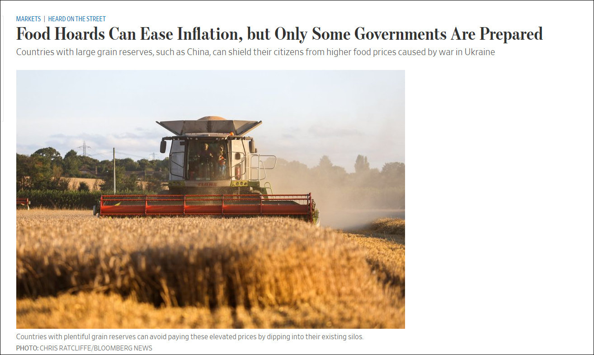
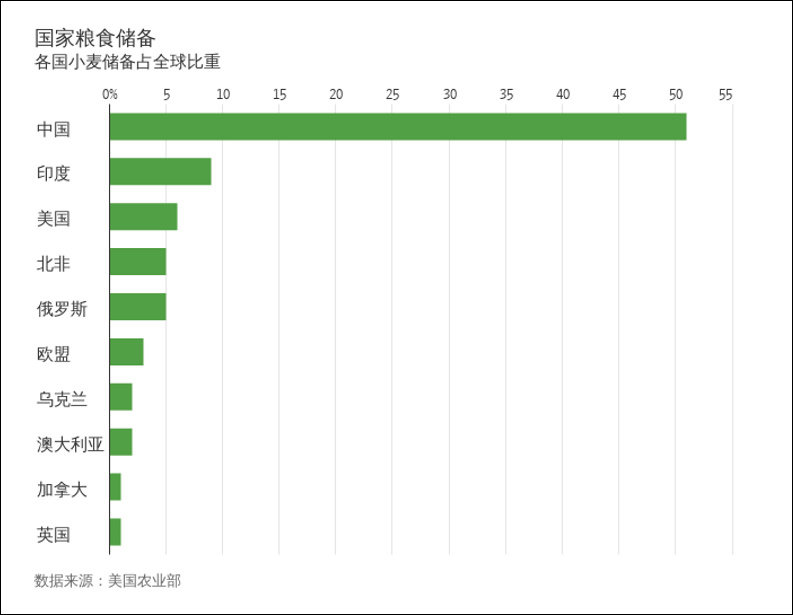

我们每个人能做的就是不要浪费粮食。
@观察者网:
【华尔街日报：#俄乌冲突粮价看涨中国准备最充分#】俄乌冲突影响乌克春耕，引发国际粮价动荡。面对即将到来的粮价高涨，《华尔街日报》3月26日刊文分析称，从全球水平来看，只有中国等少数国家有足够的粮食库存，可以应对乌克兰战争造成的粮食短缺。
据联合国粮农组织（Food and Agriculture Organization of the United Nations）预测，今年年底小麦和玉米等重要谷物的全球库存消费比将达到29%。库存消费比衡量库存占年度需求的比例，联合国粮农组织称，新的数字比疫情前要低，但还不至于令人担忧。
不过，《华尔街日报》表示，但这一总体数字具有误导性，因为只有少数国家控制着大量的粮食库存份额，其中粮食储备最多的国家是中国。美国农业部估计，中国持有全球一半的小麦储备和70%的玉米储备。
在中国以外，即便在连续五年收成创纪录之后，印度的小麦库存大概只占全球的十分之一。美国的小麦和玉米储备分别占全球的6%和12%。而尤其依赖从黑海地区进口粮食的北非国家总计约占全球小麦储备的5%。
《华尔街日报》称，多年来，中国政府一直把14亿多人口的粮食安全放在首位，中国拥有全球最大的粮食储备，并在2008年粮食价格危机后开始稳步建立国家战略储备。新冠疫情暴发以后，中国粮食进口大幅增加。农业市场数据提供商AgFlow的数据显示，2020年中国购买的谷物和油菜籽比2019年增加了26%。2021年中国粮食进口量进一步增长11%，并在今年1月和2月继续呈同比增长。
粮仓库存充足的国家可以动用现有储备，以此避免支付高涨的粮价。这可能帮助民众免受食品价格上涨之苦。中国的粮食储备庞大。中国农业部官员去年年底表示，中国小麦库存充足，可满足国内一年半消费需求。
相比之下，一些粮食储备不足的国家就需要面临风险。埃及曾被誉为罗马帝国的粮仓，但现在埃及约七成的小麦需求靠从俄罗斯和乌克兰进口，埃及目前的储备仅够该国的补贴粮食计划维持约四个半月时间。贝宁和索马里等其他国家几乎没什么粮食储备。
乌克兰和俄罗斯是全球主要粮食出口国，作为全球主要小麦生产国和出口国，乌克兰和俄罗斯合计占全球小麦出口的近30%，是全球重要“粮仓”。
目前，俄乌冲突严重影响了世界粮价。据路透社报道，乌克兰新任农业部长索尔斯基3月26日表示，乌克兰出口谷物的形势日益恶化，只有俄乌冲突结束后才会有所改善。索尔斯基表示，乌克兰通常每月出口400万至500万吨粮食，而现在每月出口量只有几十万吨。
《华尔街日报》则表示，早在2月24日俄军“入侵”乌克兰之前，两国之间的紧张局势就已经开始推高这些大宗商品的价格。据AgFlow数据显示，自去年12月以来，阿根廷小麦和玉米的现货价格分别累计上涨了27%和38%；对于许多粮食进口国，特别是非洲国家来说，阿根廷的小麦和玉米或许是乌克兰农作物的替代供应。
在文章的最后，《华尔街日报》援引《伊索寓言》的寓言故事表示，蚱蜢夏天只顾玩乐，到了冬天只能饿肚子，而忙于储存食物的蚂蚁得以安适过冬。经历了新冠疫情和俄乌战争的连续冲击之后，更多政府可能会效仿《伊索寓言》中蚂蚁的做法。当这些国家优先考虑建立粮食储备时，重要大宗商品粮食的通胀问题可能会进一步加剧。
据联合国粮农组织（Food and Agriculture Organization of the United Nations）预测，今年年底小麦和玉米等重要谷物的全球库存消费比将达到29%。库存消费比衡量库存占年度需求的比例，联合国粮农组织称，新的数字比疫情前要低，但还不至于令人担忧。
不过，《华尔街日报》表示，但这一总体数字具有误导性，因为只有少数国家控制着大量的粮食库存份额，其中粮食储备最多的国家是中国。美国农业部估计，中国持有全球一半的小麦储备和70%的玉米储备。
在中国以外，即便在连续五年收成创纪录之后，印度的小麦库存大概只占全球的十分之一。美国的小麦和玉米储备分别占全球的6%和12%。而尤其依赖从黑海地区进口粮食的北非国家总计约占全球小麦储备的5%。
《华尔街日报》称，多年来，中国政府一直把14亿多人口的粮食安全放在首位，中国拥有全球最大的粮食储备，并在2008年粮食价格危机后开始稳步建立国家战略储备。新冠疫情暴发以后，中国粮食进口大幅增加。农业市场数据提供商AgFlow的数据显示，2020年中国购买的谷物和油菜籽比2019年增加了26%。2021年中国粮食进口量进一步增长11%，并在今年1月和2月继续呈同比增长。
粮仓库存充足的国家可以动用现有储备，以此避免支付高涨的粮价。这可能帮助民众免受食品价格上涨之苦。中国的粮食储备庞大。中国农业部官员去年年底表示，中国小麦库存充足，可满足国内一年半消费需求。
相比之下，一些粮食储备不足的国家就需要面临风险。埃及曾被誉为罗马帝国的粮仓，但现在埃及约七成的小麦需求靠从俄罗斯和乌克兰进口，埃及目前的储备仅够该国的补贴粮食计划维持约四个半月时间。贝宁和索马里等其他国家几乎没什么粮食储备。
乌克兰和俄罗斯是全球主要粮食出口国，作为全球主要小麦生产国和出口国，乌克兰和俄罗斯合计占全球小麦出口的近30%，是全球重要“粮仓”。
目前，俄乌冲突严重影响了世界粮价。据路透社报道，乌克兰新任农业部长索尔斯基3月26日表示，乌克兰出口谷物的形势日益恶化，只有俄乌冲突结束后才会有所改善。索尔斯基表示，乌克兰通常每月出口400万至500万吨粮食，而现在每月出口量只有几十万吨。
《华尔街日报》则表示，早在2月24日俄军“入侵”乌克兰之前，两国之间的紧张局势就已经开始推高这些大宗商品的价格。据AgFlow数据显示，自去年12月以来，阿根廷小麦和玉米的现货价格分别累计上涨了27%和38%；对于许多粮食进口国，特别是非洲国家来说，阿根廷的小麦和玉米或许是乌克兰农作物的替代供应。
在文章的最后，《华尔街日报》援引《伊索寓言》的寓言故事表示，蚱蜢夏天只顾玩乐，到了冬天只能饿肚子，而忙于储存食物的蚂蚁得以安适过冬。经历了新冠疫情和俄乌战争的连续冲击之后，更多政府可能会效仿《伊索寓言》中蚂蚁的做法。当这些国家优先考虑建立粮食储备时，重要大宗商品粮食的通胀问题可能会进一步加剧。
- 
- 